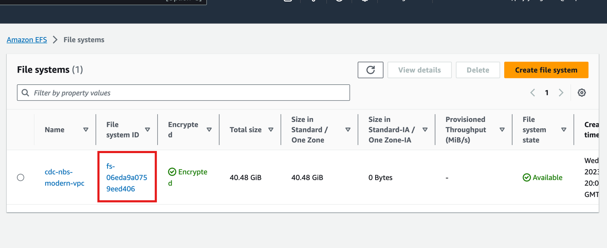

Deploy Data Sync service API (cloud)
This page walks through deploying the NBS 7 Data Sync service API using the nnd-service Helm chart from the NEDSS-Helm repository for NBS version 7.13.
This page is part of the optional NND Service (Data Sync) section. CDC is evaluating long-term support for this service. If your STLT has a use case, contact nbs@cdc.gov.
On this page
Prerequisites
- Locate the NND Service Helm chart in the NEDSS-Helm repository. Provide values for ECR repository, ECR image tag, database server endpoints, and ingress host in the
values.yamlfile. - Confirm that the following DNS entry was created and points to the Network Load Balancer (NLB) in front of your Kubernetes cluster. Use the active NLB provisioned during base install. Do this in your authoritative DNS service, such as Route 53. Replace
example.comwith the appropriate domain name invalues.yaml:- NND service application, for example:
data.example.com
- NND service application, for example:
Configure values and install
Set the required values in values.yaml before installing the chart.
- Use Git to clone your own local copy of the public NEDSS-Helm repository. The following steps use the files in
charts/nnd-service/from that repository. -
Set the image repository and tag:
image: repository: "quay.io/us-cdcgov/cdc-nbs-modernization/nnd-service" pullPolicy: IfNotPresent tag: <release-version-tag> # for example, v1.0.1 -
Set the JDBC connection values. The
dbservervalue is the database server endpoint only. Do not include the port number. For help determining these values, see the Helm values reference.The following screenshot shows the database endpoint in the Amazon RDS console:

jdbc: dbserver: "EXAMPLE_DB_ENDPOINT" username: "EXAMPLE_ODSE_DB_USER" password: "EXAMPLE_ODSE_DB_USER_PASSWORD" -
Set
efsFileSystemIdto the EFS file system ID from the AWS console.The following screenshot shows the file system ID in the Amazon EFS console:

efsFileSystemId: "EXAMPLE_EFS_ID" -
Set the Keycloak auth URI. In the default configuration, this value does not change unless the name or namespace of the Keycloak pod is modified:
authUri: "http://keycloak.default.svc.cluster.local/auth/realms/NBS" -
Install the
nnd-servicechart:helm install "nnd-service" ./nnd-service -f ./nnd-service/values.yaml -
Confirm the pod is running before continuing:
kubectl get pods
Validate the deployment
Use the actuator endpoints to confirm the service is running.
Run the info endpoint to confirm the service version and build details:
https://<data.EXAMPLE_DOMAIN>/extraction/actuator/info
Run the health endpoint to confirm the service is running:
https://<data.EXAMPLE_DOMAIN>/extraction/actuator/health
To enable Swagger for testing, specify or overwrite springBootProfile with 'dev' in charts/nnd-service/values.yaml. Swagger is disabled by default in production.
https://<data.EXAMPLE_DOMAIN>/extraction/swagger-ui/index.html#/